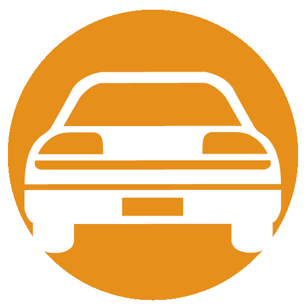

<!--
  Generated template for the DriverPage page.

  See http://ionicframework.com/docs/components/#navigation for more info on
  Ionic pages and navigation.
-->
<ion-header >
  <ion-navbar color="blue">
    <button ion-button menuToggle>
      <ion-icon name="menu"></ion-icon>
    </button>
    <ion-title>Driver</ion-title>
  </ion-navbar>
</ion-header>


<ion-content padding>
  <!-- Division to show the customer details-->
  <div id="cusDetails">
    <h3>Customer Details</h3>
    <!--Customer Name-->
    <ion-item>
      <ion-label>Name: </ion-label> <ion-label id="cusName"> Leo Messy</ion-label>
    </ion-item>

    <!--Customer vehicle No-->
    <ion-item>
      <ion-label>Vehicle No: </ion-label> <ion-label id="cusVeh"> KD-1733</ion-label>
    </ion-item>

    <!--Customer Contact No-->
    <ion-item>
        <ion-label>Contact No: </ion-label> <ion-label id="cusCont"> 0777 563470</ion-label>
    </ion-item>
  
    <!-- Customer Pickup Location-->
    <ion-item>
      <ion-label>Pick-up: </ion-label> <ion-label id="cusLoc"> http.googlemaplink</ion-label>
    </ion-item>

  </div>

  <br>
  <!-- Division to update the vehicle status-->
  <div id="VehStatus">
      <!--   -->
    <h2> Status </h2>
    <ion-item>
    <ion-label>Update Status</ion-label>
    <ion-select #status (ionChange)="onChange(status.value)">
      <ion-option value="To service Center" >To service Center</ion-option>
      <ion-option value="Servicing" >Servicing</ion-option>
      <ion-option value="From Service Center" >From Service Center</ion-option>
    </ion-select>
   
  </ion-item>
  <ion-item>
  <ion-label id="status"></ion-label>
</ion-item>
</div>
</ion-content>
